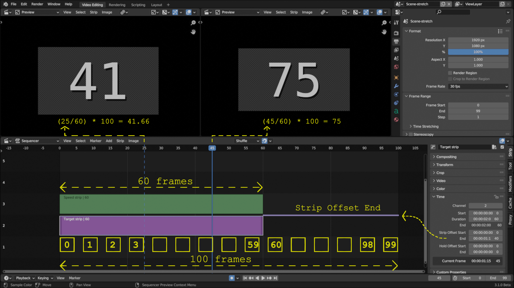
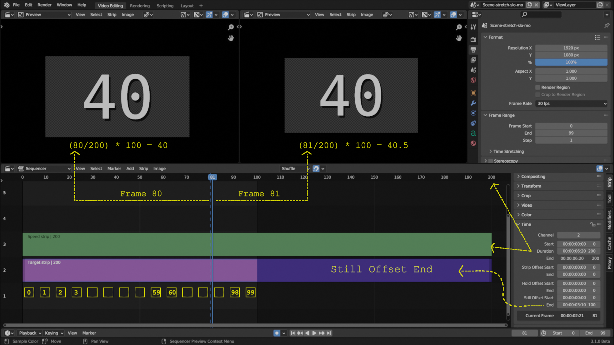
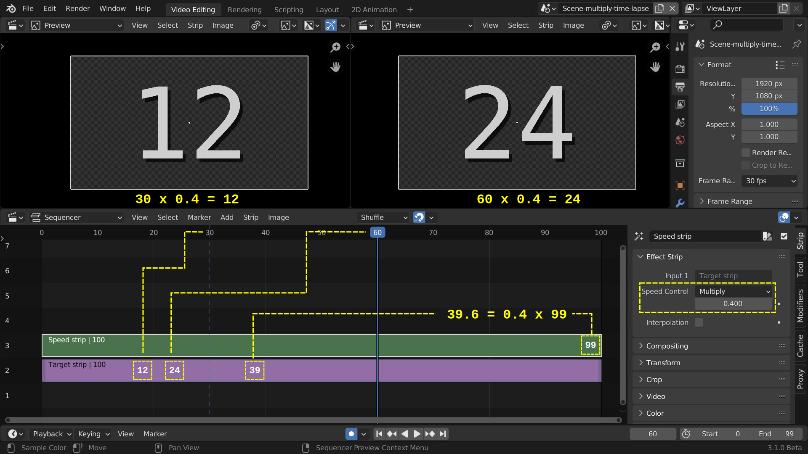
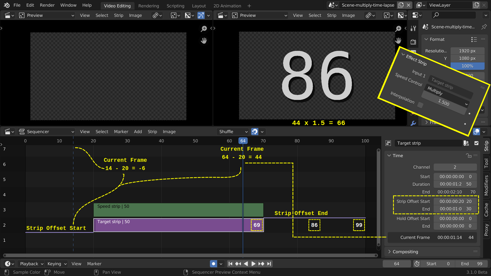
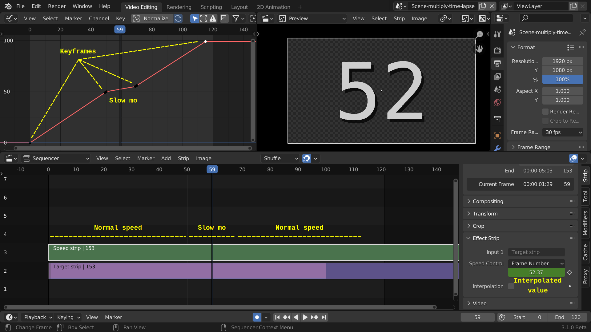

2.2.2.5. Speed¶
スピード コントロール ストリップを使用すると、ショット内のアクションの見かけの速度を変更できます。古典的な映画では、これはストリップにフレームを挿入またはスキップすることによって行われます。
図1 速度制御 - 基本概念¶
図 1 の上部のストリップには、24 フレーム/秒 (fps) のフレーム レートでカメラに記録された、赤いボールの 0.5 秒間の運動軌跡の記録が含まれています。各フレームを複製して、このストリップのコピーを作成できます。このストリップを同じフレーム レート (24 fps) でプレビューすると、スローモーションになります (図 1 の下のストリップを参照)。ボールが元の軌道の半分を移動するのに 0.5 秒または 12 フレームかかるため、ボールの見かけの速度は半分になります。中央のストリップは、タイムラプスまたはスピードアップを示しています。これは、プレビューで他のフレームをスキップすることによって行われます。軌道は 0.25 秒でプレビューされますが、元のストリップでは 0.5 秒かかりました。ボールが2倍の速さで動いているように見えます。
注釈
上記のスローモーションの方法は、本当のスローモーション（スローモーション）ではありません。そのためには、異なる録画フレーム レートとプレゼンテーション フレーム レートが必要です。ビデオを撮影すると、カメラは特定のフレーム レートでアクションを記録します。たとえば、1 秒あたり 24 または 30 の画像またはフレーム。通常の再生では、プレゼンテーション フレーム レート (Blender のプロジェクト フレーム レート) が録画フレーム レートと同じである必要があります。
ただし、カメラの録画フレーム レートが 60 fps であると仮定します。したがって、1 秒の実際の動きは 60 フレームに分散されます。ただし、このクリップを 30 fps のフレーム レートに設定されている Blender プロジェクトにインポートすることはできます。したがって、Blender でこの 60 フレームのクリップを再生するには 2 秒かかります。クリップ内の動きが遅くなっているように見えます (実際の動きの 1 秒が表示時間の 2 秒にまたがっています)。これは本当のスローモーションです。各フレームは本当に小さな動きです。図 1 のスローモーションは、重複したフレームを挿入することで実行されます。したがって、図 1 の動きの半分だけが実際のものです。残りの半分は、その時点では実際には起こりませんでした。
スピード コントロール ストリップを使用すると、図 1 のタイム ラプスまたはスロー モーション効果をシミュレートできます。 スピード コントロール ストリップを追加するには、通常のムービー、イメージ シーケンス、またはメタ ストリップを選択する必要があります (図 2 では、これがターゲット ストリップです) ）。 [Add]メニュー > [Effect] > [Speed Control] を使用するか、Shift-A で Speed コントロール ストリップ (図 2 の緑色のバー) を追加できます。このストリップは元のターゲット ストリップの上に配置され、その下に移動することはできません (ただし、より上に移動することはできます)。これをターゲット ストリップの変更されたコピーとして見ることができるため、元のターゲット ストリップを非表示にすることができます。
{kind=link}
2.2.2.5.1. Options¶
スピード コントロール ストリップを使用すると、ストレッチ、乗算、フレーム番号、長さの 4 つの方法からスピード エフェクトを作成できます。
- Stretch
再生速度は、元のターゲット ストリップの長さ (図 2 の紫色のストリップ + オフセット) とその現在表示されている長さ (図 2 の緑のストリップ) の関係によって決まります。
Speed Control ストリップが ターゲット ストリップよりも短い: ➽ time lapse または見かけのスピードアップ
Speed Control ストリップ が ターゲット ストリップと同じ長さ: ➽ 明らかな速度変化はありません。
Speed Control ストリップが ターゲット ストリップよりも長い: ➽ スローモーション
Time lapse
図 3 では、元のターゲット ストリップの継続時間は 100 フレームです (フレーム 0 ～ 99、値は 0 ～ 99)。右のストリップ ハンドルを左にドラッグすると、ストリップ オフセット エンドが導入されてストリップが短くなります。したがって、表示されるストリップとスピード コントロール ストリップは 60 フレームのみをカウントします。ターゲット ストリップの非表示のフレームは小さな紫色の線でマークされ、サイド パネルの [Strip Offset End] フィールドで示されます。
図3 Speed Control - フレームをスキップするストレッチ オプション¶
図 3 のスピード コントロール ストリップは、元のターゲット ストリップからいくつかのフレーム (例: 2、4、7、…) をスキップするため、より速く再生されるように見えます。図 3 の Speed Control ストリップを再生すると、次のフレームが表示されます。
0 1 3 5 6 8 10 11 13 15 16 18 20 21 23 25 26 28 30 31 33 35 36 38 40 41 43 45 46 48 50 51 53 55 56 58 60 61 63 65 66 68 70 71 73 75 76 78 80 81 83 85 86 88 90 91 93 95 96 98
100 フレームの元のターゲット ストリップは、60 フレームの再生ストリップに圧縮 (引き伸ばされ??) されます。そのため、いくつかのフレームがスキップされ、より速く再生されるようです。
どのフレームがスキップされ、どのフレームが表示されるのでしょうか?次の式が使用されます。
Speed[i] = Target[(i/speed length) * target length] (1)図 3 では、速度制御ストリップのフレーム 25 は、フレーム (25/60) * 100 = 41.67、またはターゲット ストリップ (左パネル) の (切り捨て) フレーム 41 の値を取得します。右側のパネルでは、速度コントロール ストリップのフレーム 45 が選択されており、プレビューにはターゲット ストリップの通常は非表示になっているフレーム (45/60) + 100 = 75 が表示されます。
元のターゲット ストリップをさらに短くした場合、たとえば最大 2 フレームにするとどうなるでしょうか。 0/2 * 100 = 0、つまりターゲット ストリップの最初のフレームであるため、スピード コントロールの最初のフレームには再び 0 の値が含まれます。 1/2 * 100 = フレーム 50 には値「50」が含まれるため、速度コントロールの 2 番目のフレームには値 50 が含まれます。 100 フレームのストリップを 2 フレームのみに高速化したい場合は、最初と中間のフレームではなく、最初と最後のフレームを選択する必要があると主張する人もいるでしょう。
Slow motion
右ハンドルを右にドラッグするか、 [Duration] フィールドを増やすことで、元のストリップの視覚的な継続時間を延長することもできます。図 4 では、Duration が 200 フレームに設定されています。これにより、Still Offset End が導入されます ( Time panel Movie strip を参照)。青みがかった紫で表現されます。スピード コントロール ストリップは元のターゲット ストリップよりも長いため、スローモーション効果が得られます。
図4 Speed Control - フレームを挿入したストレッチ オプション¶
図 4 では、速度制御ストリップは元のターゲット ストリップの 2 倍の長さです。したがって、ターゲット ストリップの各フレームには、スピード コントロール ストリップに 2 つのコピーがあります。これにより、再生速度が実質的に半分に低下します。たとえば、フレーム 80 (速度ストリップ内) は 80/200 * 100 = 40 の値を取得します。各値は切り捨てられるため、フレーム 81 は同じターゲット フレーム (40.5) を指します。ただし、フレーム 82 はフレーム 83 だけでなくターゲット フレーム 41 も指します。
ストレッチ オプションの効果は、Strip Offset EndまたはStill Offset Endの量によって制御されます。スピード コントロール ストリップは、ストリップ オフセット スタート、ホールド オフセット スタート、ホールド オフセット エンド、またはスティル オフセット スタートの影響を受けません。これらのオフセットは、最初または最後のフレームをスキップしてプレビューの長さを変更するだけで、速度には影響しません。
Tip
ストレッチ オプションは、ビデオとオーディオ ストリップの長さが同じでない場合に非常に便利です。主な原因は、ストリップとプロジェクトのフレームレートの不一致です。ビデオ速度の変化は、オーディオ速度の変化 (ピッチに影響します) よりも目立たないことがよくあります。
たとえば、10 秒の長さの 30 fps で録画されたムービーには、もちろん、10 秒のオーディオと 300 のビジュアル フレームが含まれます。このムービーを 24 fps プロジェクトにインポートすると、オーディオは 10 秒残ります。 240 タイムライン フレームの緑がかったストリップで表されます (プロジェクトは 24 fps に設定されていることに注意してください)。ただし、青っぽいムービー ストリップは 300 タイムライン フレームで実行され、300 / 24 = 12.5 秒かかります。したがって、オーディオ ストリップの長さは、ムービー ストリップの長さの 10/12.5 = 0.8 にすぎません。 [Duration] 80% に設定するか、60 フレームの Strip Offset End を追加して、ムービーの速度を下げる必要があります。
- Multiply
ドロップダウンで [Multiply] オプションを選択すると、追加フィールド (乗算係数) が表示されます (図 5 - サイド パネルを参照)。 Multiply Factor > 1 にすると、プレビューが高速化されます。係数が 1 未満の場合、アクションが遅くなります。値 = 0 (デフォルト) の場合、プレビュー速度はプロジェクトのプレゼンテーション速度と同じになります。
Time lapse

図5 乗算オプションを使用した速度制御 - タイムラプス¶
図 5 の乗算係数は 1.5 です。したがって、プレビューはプレゼンテーション速度 (fps) より 50% 高速である必要があります。スピード コントロール ストリップの各フレームは、ターゲット ストリップの 1.5 フレームの継続時間を表します。したがって、速度コントロールのフレーム 30 には、ターゲット フレーム 30 * 1.5 = 45 の値が含まれます。フレーム 60 は、ターゲット フレーム 90 の内容を取得します。一部のフレームがスキップされるため、速度コントロール ストリップは、終了フレームの前にフレームが不足します。これが発生すると、最後のものを繰り返し続けるだけになります。アクションがフリーズしているように見えます。ターゲット ストリップの最後のフレーム (フレーム 99 など) は、速度コントロール ストリップの位置 99/1.5 = フレーム 66 に表示されます。それ以降、プレビューには常に値 99 が表示されます。たとえば、ターゲット ストリップの最後のフレームです。
Slow motion
図 6 の速度制御ストリップの乗算係数は 0.4 です。したがって、ターゲット ストリップの 2 フレームの長さは、1 つのスピード コントロール フレームの長さよりもわずかに短くなります。映画の再生が遅くなったように見えます。フレーム 3 まではアクションすらありません。再生速度が遅いため、ターゲット ストリップのすべてのフレームが同じサイズのスピード コントロール ストリップに表示されるわけではありません。フレーム 99 で表示される最後の値は 39 (99 * 0.4) です。
図6 乗算オプションを使用した速度制御 - スローモーション¶
The use of Offsets
図 7 は、ストリップ オフセットの開始と終了があるため、特殊なケースです。乗算係数は 1.5 に設定されます。これらのオフセットの結果、スピード コントロール ストリップの視覚的な継続時間は両方のオフセットの合計で短縮されます。ここでは、現在のフレームの概念 (図 6、サイド パネル下部を参照) が非常に重要です。Playheadはタイムラインのフレーム 64 にありますが、現在のフレームは実際には 44 です。これは、Playhead (64) からストリップの視覚的な開始点 (20 またはストリップ オフセット開始) までのフレーム数です。ただし、ターゲット ストリップのコンテンツは、ストリップのオフセット スタートでのみ削減されます。ターゲット ストリップの最初のフレーム (フレーム 0) の値は 20 です。以前のフレームにはアクセスできなくなります。ただし、フレーム 70 ～ 99 は、表示されていなくてもアクセスできます。乗算係数が 1.5 であるため、アクションの再生が速くなったように見えます (一部のフレームがスキップされます)。
図7 乗算オプションを使用した速度制御 - スローモーションとオフセット¶
エフェクト ストリップには、スピード エフェクトの方向やサイズを示す視覚的な手がかりは得られません。プレビューからそれを推測する必要があります。
注釈
負の乗算値を入力してキーフレームすることができます。これにより、ストリップが逆再生されます。例として、以下のビデオをご覧ください。
図8 キーフレーム化された乗算係数による速度制御
ターゲット ストリップの継続時間は 100 フレーム (1 ～ 100) です。キーフレームは、フレーム 1 で値 = 1、フレーム 100 で値 = -1 の乗算係数に設定されます。+1 (フレーム 1) から -1 (フレーム 100) まで続く F カーブがグラフ エディタに表示されることに注意してください。 ）。およそフレーム 50 でゼロ値と交差します。したがって、フレーム 50 以降、乗算係数は負になり、再生方向は逆転する必要があります。プレビューには約 25 の値が表示されます。これは、1 ～ 50 の範囲で乗算係数が 1 未満であるためです。そのため、速度が遅くなります。
- Frame Number
このオプションを使用すると、最大限の制御が可能になります。現在のフレーム (タイムラインのほとんどのPlayhead) の各位置について、速度コントロール ストリップに表示するターゲット ストリップのフレーム番号を指定できます。このフレーム番号の値を keyframe 化できるため、カスタムの速度プロファイルを指定できます。たとえば、図 6 のようなスローモーション効果が必要で、フレーム 50 ～ 69 の間のみであるとします。他のフレーム (前後) は通常の速度で再生する必要があります。 50 から 69 までの 20 フレームは乗算係数 = 0.4 で再生されるため、実際に再生されるのは 5 フレームのみで、残りは複製されて挿入されます。したがって、シーケンスは次のようになります。
フレーム番号オプションを使用してスピード コントロール ストリップを選択し、Playheadをフレーム 0 (最初のフレーム) に設定します。通常、値 0 が表示されます。これはターゲット ストリップの最初のフレームです。
[フレーム番号] に値 0 を入力します。これは、表示する値がターゲット ストリップのフレーム 0 から取得されることを意味します。
フレーム番号アトリビュートにキーフレームを設定します(フィールド上にマウスを置いたときに I を押します)。フィールドが黄色になり、キーフレームが存在することを示します。
Playheadをフレーム 49 に設定します。フレーム番号属性は緑色です。それ以降変更されていないキーフレームによって値が管理されていることを示します。値は 0 のままで、プレビューも 0 です。
フレーム番号の値を 49 に変更します。プレビューが 49 に変わり、属性の色が茶色に変わります。この値をキーフレーム化します (色が黄色に変わります)。
Playheadをフレーム 50 に設定し、フレーム番号 50 を入力します。この値をキーフレーム化します。
Playheadをフレーム 69 に設定し、フレーム番号 55 を入力します。この値をキーフレーム化します。
Playheadをフレーム 70 に設定し、フレーム番号 56 を入力します。この値をキーフレーム化します。
Playheadをフレーム 115 に設定し、フレーム番号 99 を入力します。この値をキーフレーム化します。ストリップの継続時間を長くする必要があります。
図9 フレーム番号オプションによる速度制御¶
- Length
前のオプションFrame Numberと同様に、このオプションはターゲット ストリップからのフレームを表示しますが、フレーム番号はパーセンテージで指定されます。たとえば、50% の場合、図 7 の値は 70 になります。ストリップの長さは 100 フレームです。したがって、半分は 50 フレームです。ストリップ オフセットの開始 = 20 のため、そこから 50 フレームすると、フレーム 70 になります。
上の例のように、この値をキーフレーム化することもできます。
- Frame Interpolation
速度が元のフレーム レートよりも遅い場合に、フレーム間のクロスフェードを行い、画面のティアリングを軽減します。
2.2.2.5.2. Examples¶
2.2.2.5.2.1. スローモーション効果の作成¶
クリップを選択し、 エフェクト ストリップを選択します。 [Speed Control] オプションを [Multiply] に設定し、[Speed factor] を速度を調整する係数に設定します。表示速度を 50% 削減するには、0.5 を入力します。 275 フレームのクリップは半分の速度で再生されるため、最初の 137 フレームのみが表示されます。
最初のセットが表示された後、残りのフレームをスローモーションで表示したい場合は、ソース ストリップの長さを 2 倍にします ([Time]パネル > [Duration])。 0.5 以外の速度係数を使用している場合は、次の式を使用します。
new_length = real_length / speed_factor
2.2.2.5.2.2. タイムラプス + フリーズ + スローモーション シーケンスの作成¶
アクション映画では、特定の勢いまでスピードを上げたアクション、その後数秒間のフリーズ、その後のスローモーションの効果がよく使用されます。たとえば、弾丸の飛行、衝撃、スローモーションの爆発などです。
150 フレームのシーケンスがあると仮定します。最初の 100 フレームは 2 倍の速度で再生する必要があります。フレーム 100 を 20 フレームの間フリーズし、次のフレーム (101 ～ 150) をスローモーション (半分の速度) で再生する必要があります。
これは、ストリップを 3 つの部分 (0 ～ 100、100、および 101 ～ 150) に分割し、上記のテクニックを使用することで簡単に行うことができます。 1 つのストリップとフレーム番号オプションを使用してこれを実現することもできます。
Playheadをフレーム 0 に配置し、フィールド「フレーム番号」を (0 に) キーフレームします。
Playheadをフレーム 49 に移動し、フレーム番号の値を 99 に変更して、再度キーフレームを設定します。
Playheadをフレーム 50 に移動し、フレーム番号の値を 100 に変更してキーフレームを設定します。
Playheadをフレーム 69 に移動し、フレーム番号の値を 100 のままにしてキーフレームを設定します。
Playheadをフレーム 170 に移動し、フレーム番号の値を 150 に変更してキーフレームを設定します。
クリップのタイミングをさらに細かく制御するには、グラフ エディターを使用します (図 10 を参照)。
図10: グラフ エディターと組み合わせた速度制御 (オプションのフレーム番号)¶
横軸はシーケンサーのタイムラインを表します。縦軸は、ターゲット ストリップの内部フレーム シーケンスを表します。ご覧のとおり、シーケンサー タイムラインの最初の 50 フレームは、ターゲット ストリップ フレーム シーケンスのフレーム 0 からフレーム 99 まで実行されるため、実際には各フレームをスキップします。フレーム 100 (ターゲット ストリップから) は、シーケンサー タイムラインのフレーム 69 まで所定の位置に残ります (= フリーズ)。スローモーションは、内部のターゲット ストリップ フレーム シーケンスから 50 フレームだけを再生するのに、シーケンサー タイムラインから 100 フレームが必要であるという事実によって説明されます。元のターゲット ストリップはシーケンサー タイムライン上で 150 フレームしか必要としないため、その継続時間を 170 まで拡張する必要があります (右側の濃い紫色の領域)。
乗算係数をキーフレーム化することは可能ですが、通常はフレーム番号を直接キーフレーム化する必要があります。カーブ補間はデフォルトでリニアに設定されていますが、ベジェに変更してイーズイン効果やイーズアウト効果を作成できます。
2.2.2.5.2.3. ビデオのフレームレートの変更¶
速度コントロールを使用して、ビデオのフレーム レート (fps) を変更できます。ビデオをシーケンス セットにレンダリングしている場合は、[Multiply] オプションと [Multiply factor] を使用することで、作成される個々のイメージ ファイルの数を効果的に増減できます。
たとえば、5 分間のビデオを 30 fps でキャプチャし、それを 24 fps で動作するフィルムに転送したい場合は、乗算係数に 30/24、つまり 1.25 を入力します (そして、フレーム補間を有効にして、そのフィルムにぼやけた感じ）。
Blender は 5 × 60 × 30 = 9000 フレームを生成する代わりに、 9000 / 1.25 = 7200 = 5 × 60 × 24 フレームを生成します。
この場合、開始= 1 および終了= 7200 に設定し、フォーマット出力をたとえば` jpeg` 30fps に設定すると、0001.jpg から 7200.jpg までの 画像ファイルがレンダリングされますが、これらの画像は 9000 フレーム全体をカバーします。画像ファイル 7200.jpg のフレーム 9000 は同じです。エンコードにより品質が低下する可能性があることに注意してください。